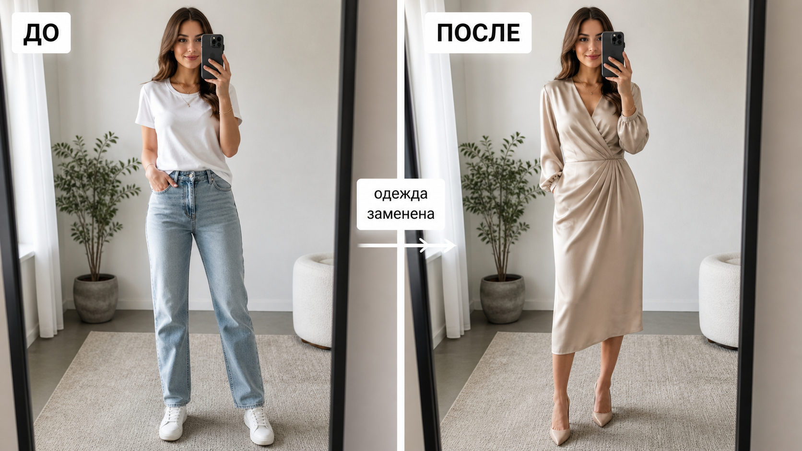

Промтзилла
В примерке важнее всего сохранить человека. Меняться должна только одежда, а лицо, поза, руки, пропорции и фон остаются прежними.

Пошаговая инструкция
- 1Возьми фото человека в полный рост или по пояс, где хорошо видна одежда и руки.
- 2Загрузи фото в инструмент редактирования фото онлайн.
- 3Опиши новую вещь: тип, цвет, ткань, посадку, длину и стиль.
- 4Вставь промт и отдельно попроси сохранить лицо, фигуру, позу и фон.
- 5Проверь руки, талию, плечи, воротник и края ткани: там чаще всего видны ошибки.
Пример результата
На обложке показан сценарий до/после: исходное фото и результат, который можно получить через инструмент редактирования фото онлайн.
Промт
RU
Замени одежду на человеке на фото. Новая одежда: [подробно опиши вещь, цвет, ткань, посадку и стиль]. Важно: — измени только одежду; — сохрани лицо, волосы, фигуру, позу, руки, пропорции тела и фон; — новая одежда должна сидеть естественно по плечам, талии, рукам и длине; — добавь реалистичные складки, швы, фактуру ткани и тени; — не меняй возраст, выражение лица, макияж и черты внешности; — не добавляй логотипы и лишние аксессуары, если я не просил. Результат должен выглядеть как реальная примерка этой одежды на том же человеке.
EN
Replace the clothing on the person in the photo. New clothing: [describe the garment, color, fabric, fit, and style in detail]. Important: — change only the clothing; — preserve face, hair, body shape, pose, hands, body proportions, and background; — the new clothing should fit naturally around shoulders, waist, arms, and length; — add realistic folds, seams, fabric texture, and shadows; — do not change age, facial expression, makeup, or appearance; — do not add logos or extra accessories unless requested. The result should look like a real try-on of this clothing on the same person.
Важно
Виртуальная примерка даёт визуальную оценку, но не гарантирует реальную посадку, размер и качество ткани. Для покупки проверяй размерную сетку и возврат.
Теги